Zhao Ming (赵明)
Direksi
Pemimpin Visioner yang mengarahkan strategi dan perkembangan ViVienDo agar selalu inovatif dan berorientasi pada kualitas.
Alamat: 88 Zhongshan Road, Pudong, Shanghai
Negara: Tiongkok
Unduh data Plants vs Zombies™ 2 secara gratis!
ViVienDo PVZ2 adalah platform digital yang menyediakan berbagai data Plants vs Zombies™ 2, baik versi gratis maupun premium yang telah dimodifikasi secara eksklusif oleh Tim ViVienDo. Kami berkomitmen mendukung komunitas gaming dengan memberikan akses mudah, cepat, dan aman dalam menikmati game ini secara maksimal.
Visi: Menjadi platform distribusi PvZ2 modifikasi terdepan yang aman, inovatif, dan dipercaya komunitas global.
Misi: Menyediakan data PvZ2 berkualitas tinggi, legal, dan aman bagi semua pengguna, sekaligus mendorong pengembangan komunitas dan kreativitas modifikasi game secara berkelanjutan.
Plants vs Zombies™ 2 dikembangkan oleh PopCap Games, bagian dari Electronic Arts (EA). Kami mendukung dan menghormati hasil karya para pengembang aslinya.
Platform ViVienDo beroperasi sesuai kebijakan digital yang berlaku dan menghormati hak cipta. Konten kami tidak untuk tujuan komersial kecuali dengan izin resmi.
Dengan mengakses layanan ini, Anda menyetujui ketentuan dan kebijakan distribusi yang kami tetapkan.
"Sangat berguna dan lengkap. Fitur premium-nya mantap banget, apalagi bebas iklan!" – @PvZProGamer
"Saya bisa akses semua mod PvZ2 favorit dengan cepat. Tim-nya responsif dan komunitas aktif." – FloraTactics
Video ini menampilkan cuplikan fitur-fitur premium dan gameplay eksklusif dari data versi berbayar. Perlu diingat, data gratis yang kami bagikan adalah versi demonstrasi dan beberapa fitur mungkin berbeda dari yang terlihat dalam video. Namun, jangan khawatir — meskipun versi gratis memiliki keterbatasan, fitur dan pengalaman yang ditawarkan tetap menarik dan memadai untuk kebutuhan Anda. Nikmati kualitas terbaik tanpa biaya, dengan kemungkinan upgrade ke versi premium untuk fitur lengkap.
Jelajahi berbagai fitur menarik dan konten visual dari data premium serta modifikasi eksklusif yang telah dikembangkan secara khusus untuk memberikan pengalaman bermain yang lebih seru, lengkap, dan bebas batasan.
Ikuti langkah-langkah berikut untuk memastikan data premium berfungsi maksimal di perangkat Anda. Pastikan Anda telah mengunduh file sesuai instruksi dari admin ViVienDo.
Hapus terlebih dahulu file save lama jika ada. Jangan gunakan bersamaan dengan mod lain untuk menghindari crash.
Pastikan perangkat Android Anda memiliki ruang penyimpanan yang cukup & izin akses file aktif.
File unduhan biasanya terdiri dari: file Save Data (.dat), file OBB, dan petunjuk khusus jika tersedia.
Salin data ke direktori:
/Android/data/com.ea.game.pvz2_row/files/No_Backup/pp.dat
/Android/data/com.ea.game.pvz2_row/files/No_Backup/CDN.**.*/
Jika ada file obb salin ke:
/Android/obb/com.ea.game.pvz2_row/main.****.com.ea.game.pvz2_row.obb/
Setelah file dipindahkan, restart aplikasi Plants vs Zombies™ 2 untuk memuat data baru.
Jika ingin menyimpan progres, login ke akun Google Play Games / EA (opsional).
Data akan otomatis tersinkronisasi saat terhubung ke internet.
Simpan salinan data premium di penyimpanan eksternal untuk berjaga-jaga.
Jangan modifikasi manual file jika tidak memahami strukturnya.
Jangan unggah ulang data ke platform publik tanpa izin dari Tim ViVienDo.
Gunakan hanya di perangkat pribadi dan hindari penggunaan di emulator ilegal.
Hubungi admin jika Anda mengalami masalah saat penginstalan.
Data Premium ViVienDo dikembangkan dengan tujuan memberikan pengalaman terbaik, tanpa iklan, tanpa batasan, dan langsung bisa digunakan tanpa proses repot.
Nikmati strategi, tantangan, dan seluruh fitur tersembunyi Plants vs Zombies™ 2 dengan lebih bebas dan profesional bersama ViVienDo!
Aplikasi dan file OBB versi original dapat diunduh langsung melalui tautan resmi di Play Store: Unduh
Sementara itu, file OBB dan Data versi premium yang digunakan dalam demonstrasi video adalah hasil modifikasi eksklusif oleh tim ViVienDo. Semua modifikasi dilakukan menggunakan aplikasi peretas buatan internal kami sendiri.
Kami menegaskan bahwa kami tidak mengambil konten dari pihak lain atau menggunakan alat peretas umum yang beredar di internet. Tim ViVienDo mengembangkan dan mengelola seluruh proses modifikasi secara mandiri dan profesional untuk menjamin keamanan dan integritas data.
Zomboss menjalankan proyek perusahaannya dengan sangat baik dan tidak ada waktu untuk mengkhawatirkan panasnya musim panas. Periksa tanaman Anda untuk melihat bagaimana mereka menghadapi rencana jahat Zomboss dalam pembaruan terbaru Plants vs Zombies™ 2!
Bersiaplah untuk musim berikutnya yang penuh kejutan! Tanaman-tanaman dan acara baru dengan kekuatan unik akan hadir untuk membantu Anda menghadapi rencana jahat Zomboss.
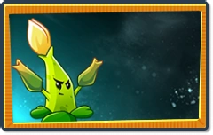
Tanaman penembak asam yang menyebar dalam pola menyilang, memberikan efek lambat pada zombie dan menghasilkan damage area kecil. Cocok untuk pengendalian gerombolan di jalur tengah.
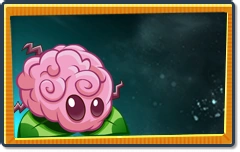
Tanaman pengganggu psikologis zombie yang menyebabkan kebingungan sementara. Zombie akan saling menyerang dan kehilangan arah. Cocok untuk strategi defensif yang licik.
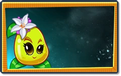
Tanaman penyembuh berperan sebagai support. Memulihkan HP tanaman sekitar dan memberikan bonus armor sementara. Pilihan utama untuk mode bertahan hidup jangka panjang.
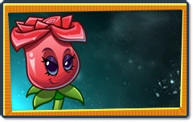
Tanaman elegan yang memancarkan pesona mematikan. Mampu memperlambat waktu di jalurnya dan menyerang dengan kelopak tajam. Efektif untuk jalur prioritas tinggi.
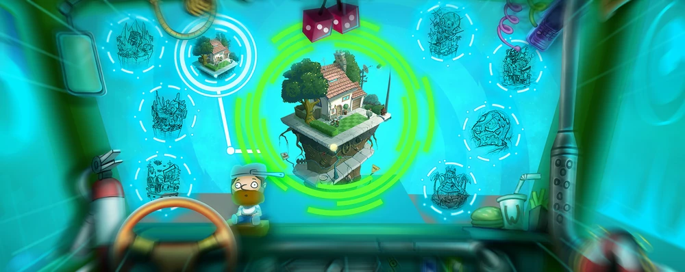
Universal Adventure membawa Anda ke petualangan intergalaksi penuh aksi dan kejutan! Hadapi tantangan baru di setiap dunia dan menangkan hadiah spesial hanya dalam waktu terbatas.
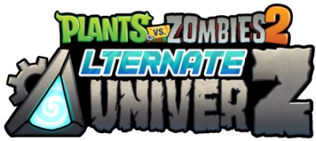
Alternate UniverZ atau Project AltverZ adalah mod PvZ2 berdasarkan ItsPForPea dan KF4, saat ini sedang dikembangkan oleh Poss dengan bantuan tambahan dari komunitas. Tujuan dari mod ini adalah untuk memperbarui versi vanilla PvZ2 dengan perubahan nostalgia seperti perkembangan PvZ1, serta konten dan mekanisme tambahan. Namun, kesulitannya diarahkan untuk pemain yang lebih kasual dan perlahan-lahan meningkat seiring kemajuan Anda melalui permainan, tetapi ada juga konten tambahan untuk pemain berpengalaman!
Dikembangkan oleh: Tim ItsPForPea dan KF4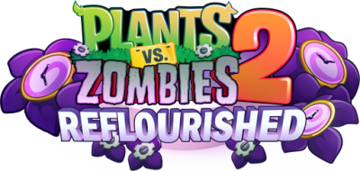
Bagaimana jika PvZ2 tidak berakhir dalam Present Tense? Bagaimana jika dia terus mendapatkan dunia baru, bagaimana jika dia hanya... terus ada? Itulah pertanyaan yang ingin dijawab PvZ2: Reflourished! PvZ2: Reflourished adalah mod kasual dengan dunia baru dalam gaya PopCap penuh, dengan musik, grafik, bos, dan banyak lagi! Seiring dengan dunia baru, Reflourished menghadirkan level ekspansi tambahan yang menantang ke dunia asli, yang dirancang untuk mereka yang ingin menangani konten yang lebih kompleks. Untuk membuat permainan lebih manis, Reflourished menyertakan Piñata Party dan Inzanity quests, yang pasti akan memberi Anda banyak hal yang harus diwaspadai, bahkan setelah Anda menyelesaikan.
Dikembangkan oleh: Tim PvZABFan dan PeaMix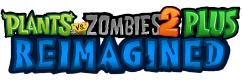
Tanaman vs. Plants vs. Zombies 2: PLUS Reimagined adalah mod yang hanya berfokus pada konten baru, atau menggunakan konten lama dari perspektif baru. Mod saat ini sedang dalam pengembangan. Dikembangkan oleh FazeSmuziy dan KL12 sebagai pengembang utama. Perkiraan output: Musim dingin 2024 - Januari 2025.
Dikembangkan oleh: Tim NoobYtLolzPvz2 Thyme adalah mod Cina untuk Pvz2 lama yang bagus. Mod ini tidak akan membuat Anda bosan, karena ini adalah komplikasi dari PvZ2 asli dengan konten tambahan baru! Pvz2 Thyme ditujukan untuk pemain yang telah menyelesaikan PvZ2 asli dan tidak memiliki ekstrem dan kesulitan.
Dikembangkan oleh: Tim CCogStudios dan Krayleb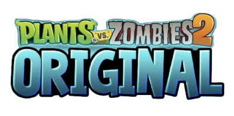
Tidak peduli seberapa orisinalnya, Original menambahkan banyak konten asli! Menjadi mod Cina yang menantang lainnya, Original mencoba meningkatkan kesulitan, dimulai dengan tantangan yang lebih mudah dan diakhiri dengan tantangan yang cukup sulit. Mod ini menambahkan banyak level baru, lebih banyak tanaman asli, banyak zombie baru, dan banyak lagi.
Dikembangkan oleh: Tim Komunitas Penggemar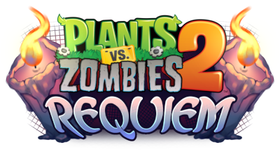
PvZ2: Requiem adalah PvZ2 yang dirombak sepenuhnya dengan fokus pada PvZ1! Mod ini merombak mekanisme hampir setiap tanaman dan zombie! Sekarang hampir setiap tanaman dan zombie telah mengembalikan mekanisme dari bagian pertama waralaba! Contoh: Zombie. Pemain sepak bola sekarang hanya mengejar otak kita, dan tidak pergi untuk menabrak. Dan juga helmnya sekarang menjadi baju besi!
Dikembangkan oleh: Tim DT_MP / Mine Power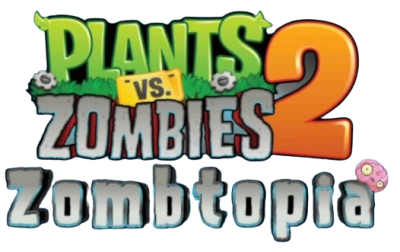
Apakah Anda menikmati minigame "I'm a Zombie" dari PvZ1? Maka mod ini cocok untuk Anda! Sekarang semuanya berbeda. Sekarang Anda adalah zombie, dan Anda lapar akan otak! Untuk menyelesaikan level yang terkadang sulit dalam mod ini, Anda memerlukan Sepasang Otak!
Dikembangkan oleh: Tim MilkypugPvZ2 Edgest relatif baru di antara mod lain untuk game favorit kami, tetapi itu tidak menghentikannya untuk menjadi kurang unik! Edgest, serta sebagian besar mod, berfokus pada klasik! Selain itu, semua peta dalam game dibuat dengan gaya rilis PvZ2 dari tahun 2013!
Dikembangkan oleh: Tim uzzHadapi zombie Mesir kuno dengan makam dan jebakan waktu klasik.
Lawan bajak laut dan zombie jungkat-jungkit di papan kapal bajak laut.
Tanam di rel gerbong sambil menghadapi zombie koboi liar!
Bekukan musuh dan panaskan medan saat melawan zombie es zaman prasejarah.
Temukan emas dan hadapi zombie petualang di reruntuhan hutan kuno.
Gunakan tile energi dan tanam secara strategis melawan zombie masa depan.
Kembalilah ke abad kegelapan dengan zombie penyihir dan tanpa matahari alami.
Setiap genre musik mempengaruhi gerakan zombie! Siap-siap bernostalgia.
Hadapi dinosaurus yang mendorong zombie dan ubah formasi medan perang.
Atasi gelombang laut dan zombie selancar yang cepat menyergap.
Kombinasi dari semua dunia! Tantangan tertinggi dari semua zombie PvZ2.
Kombinasi dari semua dunia! Tantangan tertinggi dari semua zombie PvZ2.
Kombinasi dari semua dunia! Tantangan tertinggi dari semua zombie PvZ2.
Koleksi level kustom ini merupakan hasil karya eksklusif dari Tim ViVienDo , yang dirancang khusus untuk para penggemar setia Plants vs Zombies™ 2. Setiap level dibuat dengan penuh pertimbangan untuk memberikan tantangan unik dan pengalaman bermain yang lebih mendalam. Mohon jangan mengubah nama file setelah diunduh guna memastikan level dapat dimuat dengan benar dan menghindari masalah seperti layar kosong (blank screen ), crash, atau force close saat memainkannya
/Android/data/com.ea.game.pvz2_row/files/No_Backup/CDN.**.*/levels/
ViVienDo berkomitmen untuk terus menyajikan konten inspiratif dan bermanfaat. Jika Anda merasa terbantu atau terhibur, pertimbangkan untuk memberi dukungan. Kontribusi Anda sangat berarti bagi keberlangsungan karya kami.
Kami menggunakan Sociabuzz — platform donasi yang aman,
mudah digunakan, dan mendukung berbagai metode transaksi, termasuk
internasional.
Ingin memiliki halaman dukungan seperti ini? Daftar gratis melalui
tautan referral resmi kami
dan nikmati bonus saldo awal dari Tim ViVienDo tanpa batas waktu
sebagai apresiasi pendaftaran pertama Anda. Bonus ini hanya tersedia
jika Anda mendaftar melalui tautan referral resmi kami.
Kami adalah tim yang berdedikasi untuk menghadirkan konten terbaik dan layanan terbaik untuk Anda. Kenali para penggerak di balik ViVienDo.
Direksi
Pemimpin Visioner yang mengarahkan strategi dan perkembangan ViVienDo agar selalu inovatif dan berorientasi pada kualitas.
Alamat: 88 Zhongshan Road, Pudong, Shanghai
Negara: Tiongkok
Divisi Kreatif
Bertanggung jawab memastikan operasional dan kualitas konten berjalan sesuai standar tertinggi kami.
Alamat: 21 Huaihai Middle Road, Xuhui, Shanghai
Negara: Tiongkok
Divisi Teknologi
Ahli teknologi yang menjaga infrastruktur digital ViVienDo tetap aman, stabil, dan terus berkembang.
Alamat: 5 Shennan Avenue, Futian, Shenzhen
Negara: Tiongkok
Investor Utama
Pendukung utama ViVienDo yang menyediakan sumber daya dan dukungan finansial demi pertumbuhan dan keberlangsungan proyek.
Alamat: Tidak diketahui
Negara: Indonesia
Kami di ViVienDo selalu terbuka untuk berkolaborasi dengan individu, kreator, atau tim yang memiliki semangat dan visi serupa dalam mengembangkan konten, aplikasi, maupun solusi kreatif — khususnya dalam dunia game modifikasi Plants vs Zombies™ 2.
Dengan pengalaman, keahlian teknis, dan standar keamanan yang tinggi, kami percaya sinergi yang kuat dapat membuka potensi lebih besar untuk komunitas. Apabila Anda memiliki ide, proyek, atau keahlian di bidang teknis, desain, atau promosi, kami sangat antusias untuk berdiskusi lebih lanjut.
Hubungi Tim ViVienDo melalui platform resmi kami dan mari wujudkan inovasi bersama dengan kolaborasi yang positif, profesional, dan saling menguntungkan.
Jika Anda memiliki pertanyaan, masukan, atau memerlukan bantuan terkait layanan kami, jangan ragu untuk menghubungi kami melalui saluran resmi di bawah ini. Tim ViVienDo siap membantu Anda dengan cepat dan profesional.